Componente Galeria UML Miró
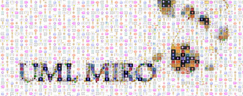
La galería UML Miró toma su nombre el artista Joan Miró (1893-1983), en donde los diferentes elementos de UML son representados por iconos que recuerdan las obras, formas y colores utilizados por el artista.
El componente ofrece iconos para la identificación de los diagramas, para las barras de los diferentes plugins asociados a UML y una serie de iconos personalizados para cada artefacto usados en los diferentes diagramas.
El objetivo del componentes es generar un entorno agradable de uso para la herramienta, ofreciendo iconos distintivos y vistozos, que apoyen la creatividad en los procesos de diseño y desarrollo de software.
Estos son algunos de los iconos que se pueden encontrar en la Galería UML Miró.
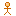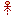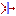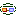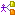 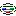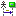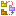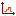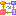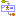
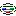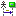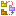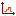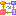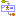 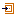
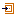 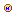
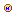
La galería UML Miró toma su nombre el artista Joan Miró (1893-1983), en donde los diferentes elementos de UML son representados por iconos que recuerdan las obras, formas y colores utilizados por el artista.
El componente ofrece iconos para la identificación de los diagramas, para las barras de los diferentes plugins asociados a UML y una serie de iconos personalizados para cada artefacto usados en los diferentes diagramas.
El objetivo del componentes es generar un entorno agradable de uso para la herramienta, ofreciendo iconos distintivos y vistozos, que apoyen la creatividad en los procesos de diseño y desarrollo de software.
Estos son algunos de los iconos que se pueden encontrar en la Galería UML Miró.
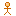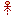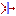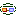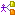
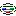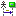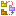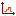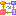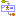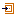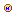